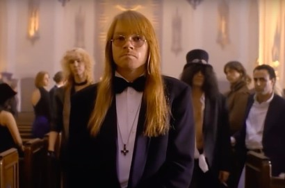

g1
o globo
valor
ge
cartola
globoplay
dropz
gshow
quem
receitas
Após mais de 20 anos, Pantera prepara turnê para 2023
Blind Guardian lança o novo single Violent Shadows
Metallica estreia lyric video do clássico Master Of Puppets

Guns n' Roses
Quase dois bilhões de visualizações para “November Rain”
o videoclipe tornou-se o primeiro da era pré-YouTube a superar um bilhão de visualizações
Megadeth
Há exatos 25 anos, Megadeth se jogava de cabeça nas experimentações
As partes experimentais são realmente fora dos padrões da banda
Ozzy Osbourne
As maiores loucas ja cometidas. O que é de fato e o que é lenda?
Ozzy cheirou uma carreira de formigas ao invés de uma de cocaína?
AC/DC
"As mais" de quatro décadas de “Back In Black”
Um dos discos mais emblemáticos da história do Hard Rock completou 41 anos
Metal
Melhores de 2021 – Categoria: Metal Nacional
Edu Falaschi é o Nº1 com álbum – “Vera Cruz”, seguido pelas bandas Tribal Scream e Paradise In flames
Slash
Fato ou lenda?? O dia em que Slash trollou o rei do pop
Slash simplesmente decidiu que não iria terminar o seu solo na hora combinada
Gibson
Gibson e Dave Mustaine lançam Flying V EXP Rust In Peace
Celebrando o álbum clássico de thrash metal editado em 1990
Dois novos modelos elétricos
D'Angelico anuncia novas guitarras Excel DC XT e SS XT
As novas guitarras apresentam versões premium dos modelos standard
Roubo de guitarras
Buckethead, afirma que dez de suas guitarras foram roubadas
Dez das guitarras mais importantes da minha vida foram roubadas. É uma perda tremenda
Fallen e CS:GO
FalleN planeja se aposentar do CS:GO em 2023
Atuar como treinador ou criador de conteúdo estão entre os planos do jogador
Novo MMORPG Br
The Tavern Online é um MMORPG brasileiro inspirado em Tibia e outros jogos do gênero
Título terá um beta fechado em agosto
One Piece
Mangá entrará em hiato e se aproxima da reta final
One Piece completará, em 2022, 25 anos do lançamento inicial